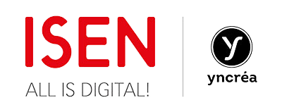
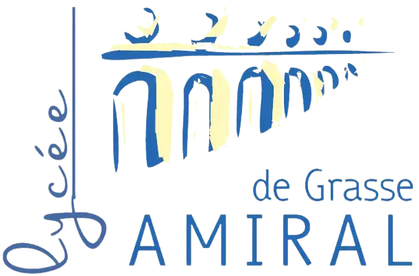
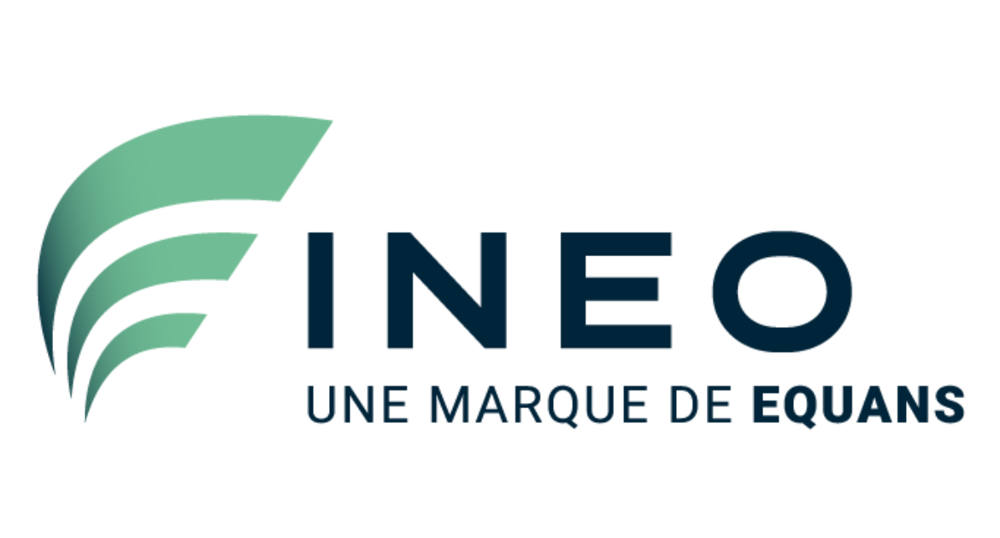

Mon parcours
B.U.T. R&T
I.U.T. de Sophia-Antipolis - FRANCE
2022 - Aujourd'hui
Préparation d'un Bachelor Universitaire de Technologie à l'I.U.T Côte d'Azur, en Réseaux et Télécommunications.
La formation du Bachelor Universitaire de Technologie (BUT) met l'accent sur l'acquisition de compétences avancées en techniques informatiques et réseaux. Cela inclut la compréhension de l'architecture matérielle, la programmation, les systèmes d'exploitation, les réseaux, le web, Internet, la mobilité, les systèmes de gestion de bases de données, la téléphonie, la virtualisation, la gestion de projet et la communication.
La formation du Bachelor Universitaire de Technologie (BUT) met l'accent sur l'acquisition de compétences avancées en techniques informatiques et réseaux. Cela inclut la compréhension de l'architecture matérielle, la programmation, les systèmes d'exploitation, les réseaux, le web, Internet, la mobilité, les systèmes de gestion de bases de données, la téléphonie, la virtualisation, la gestion de projet et la communication.

I.S.E.N. Yncréa Méditerranée
CPGE
Toulon - FRANCE
2020 - 2022
Première année en CPGE MPSI,
seconde année en filière PSI.
Ces deux années m'ont permis l'acquisition
de solides connaissances en mathématiques,
physique et sciences
de l'ingénieur.
seconde année en filière PSI.
Ces deux années m'ont permis l'acquisition
de solides connaissances en mathématiques,
physique et sciences
de l'ingénieur.
Lycée Amiral de Grasse
Grasse - FRANCE
2017 - 2020
Obtention du baccalauréat scientifique mention "très bien" spécialité mathématiques et option arts plastiques.

Alternante développeuse logicielle chez Ineo Defense
depuis Octobre 2023
Valbonne, FRANCEMes missions sont les suivantes :
- Mise en conditions de sécurité (MCS) côté produit et logiciel.
- Étude des besoin des équipes de développement en méthodologie de conception et d'implémentation sécurisée.
- Veille et réponse à incident orienté produit.
- Étude des outils et processus qualifiant le code en termes de résistance aux attaques de hackers.
- Cartographie du risque : threat modeling, documentation des modèles de menace.
- Sécurité de la chaîne d'approvisionnement logicielle.
- Réalisation de preuves de concept (PoC).

Emplois saisonniers et étudiants
Employée Spar
2022 - 2023
Saint-Vallier-de-Thiey, FRANCE- Travail les dimanches et jours fériés
- Gestion de la caisse, du pain
- étiquetage des produits
- Réception des colis
Emploi saisonnier Carrefour Provencia
juin 2022 - juillet 2022
Thonon-les-bains, FRANCE - Rayon frais et surgelés